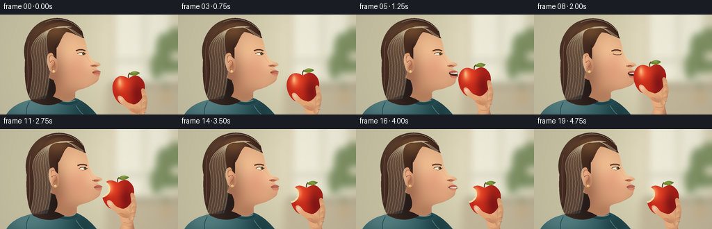
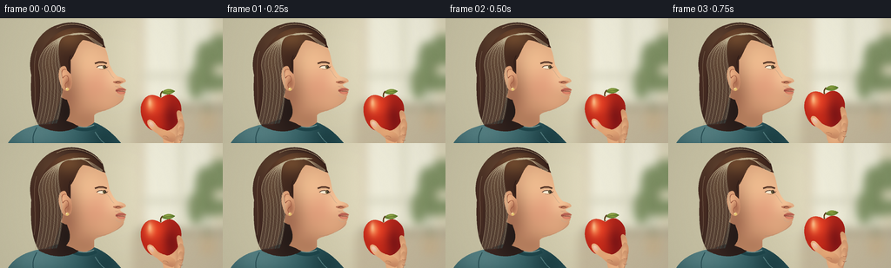
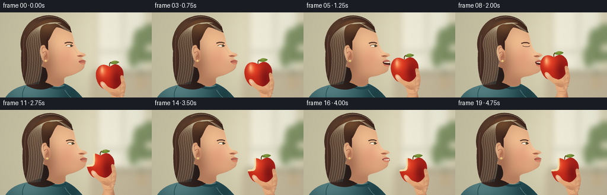
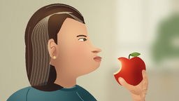

CODING AGENTS AS PIXEL WORLD MODELS
traex/GPT-6.1-Sol · motion_rationality_0006
点击播放 · 原生 RGB 像素
逐轮保存的候选
回放视频、检查图与代码变化。
每份候选均可单独播放。实际图片检查记录在下方工具轨迹中。
候选 01播放与检查图
点击播放 · 原生 RGB 像素

展开代码变化
--- 上一保存版本
+++ 本次保存版本
@@ -0,0 +1,234 @@
+from pathlib import Path
+import math
+import numpy as np
+from PIL import Image, ImageDraw, ImageFilter
+import artifact_io
+
+ROOT = Path(__file__).resolve().parent
+W,H,S=256,144,4
+SZ=(W*S,H*S)
+Y,X=np.mgrid[0:H*S,0:W*S].astype(np.float32)/S
+
+def bezier_path(commands):
+ pts=[]; p=(0,0); start=None
+ for c in commands:
+ op=c[0]; a=c[1:]
+ if op=='M': p=(a[0],a[1]); start=p; pts.append(p)
+ elif op=='L': p=(a[0],a[1]); pts.append(p)
+ elif op=='C':
+ p0=p; p1=a[0:2]; p2=a[2:4]; p3=a[4:6]
+ steps=max(12,int(math.dist(p0,p3)*1.4))
+ for t in np.linspace(0,1,steps+1)[1:]:
+ u=1-t; pts.append((u**3*p0[0]+3*u*u*t*p1[0]+3*u*t*t*p2[0]+t**3*p3[0],u**3*p0[1]+3*u*u*t*p1[1]+3*u*t*t*p2[1]+t**3*p3[1]))
+ p=tuple(p3)
+ elif op=='Q':
+ p0=p; p1=a[:2]; p2=a[2:]
+ for t in np.linspace(0,1,30)[1:]:
+ u=1-t;pts.append((u*u*p0[0]+2*u*t*p1[0]+t*t*p2[0],u*u*p0[1]+2*u*t*p1[1]+t*t*p2[1]))
+ p=tuple(p2)
+ elif op=='Z': pts.append(start); p=start
+ return [(round(x*S),round(y*S)) for x,y in pts]
+
+def pathmask(cmd):
+ m=Image.new('L',SZ);ImageDraw.Draw(m).polygon(bezier_path(cmd),fill=255);return m
+
+def solid(im,cmd,col):
+ layer=Image.new('RGBA',SZ,col);layer.putalpha(pathmask(cmd));im.alpha_composite(layer)
+
+def shade(im,cmd,base,spots=(),slope=(0,0)):
+ m=pathmask(cmd)
+ a=np.zeros((H*S,W*S,3),np.float32)+np.array(base,dtype=np.float32)
+ a+=((X-110)*slope[0]+(Y-70)*slope[1])[...,None]
+ for cx,cy,rx,ry,color,strength in spots:
+ z=np.exp(-((X-cx)/rx)**2-((Y-cy)/ry)**2)*strength
+ a=a*(1-z[...,None])+np.array(color)[None,None,:]*z[...,None]
+ layer=Image.fromarray(np.clip(a,0,255).astype('uint8'),'RGB').convert('RGBA');layer.putalpha(m);im.alpha_composite(layer)
+
+def curve(im,cmd,color,width=1):
+ ImageDraw.Draw(im).line(bezier_path(cmd),fill=color,width=max(1,round(width*S)),joint='curve')
+
+def ell(im,box,col):
+ ImageDraw.Draw(im).ellipse(tuple(int(v*S) for v in box),fill=col)
+
+def smooth(v):
+ v=min(1,max(0,v));return v*v*(3-2*v)
+
+# Warm, deliberately out-of-focus kitchen light: the actor and apple stay sharp.
+base=np.empty((H*S,W*S,3),np.float32)
+base[:]=[202,196,166]
+l=np.exp(-((X-201)/76)**2-((Y-44)/104)**2)
+base=base*(1-l[...,None]*.72)+np.array([248,241,215])*l[...,None]*.72
+bg=Image.fromarray(base.astype('uint8'),'RGB').convert('RGBA')
+bgd=ImageDraw.Draw(bg)
+bgd.rectangle((159*S,0,168*S,102*S),fill=(220,210,184))
+bgd.rectangle((167*S,0,243*S,96*S),fill=(239,237,218))
+bgd.rectangle((206*S,0,210*S,99*S),fill=(212,210,185))
+bgd.rectangle((162*S,64*S,256*S,69*S),fill=(211,209,186))
+bgd.rectangle((157*S,98*S,256*S,106*S),fill=(178,170,144))
+bgd.rectangle((152*S,106*S,256*S,144*S),fill=(196,184,156))
+for cx,cy,rx,ry in [(235,51,11,24),(245,74,16,10),(225,75,9,19),(251,37,13,18)]:
+ ell(bg,(cx-rx,cy-ry,cx+rx,cy+ry),(130,148,103,255))
+curve(bg,[('M',240,112),('C',233,89,241,65,244,42)],(106,121,80),2)
+solid(bg,[('M',228,108),('L',249,108),('L',247,129),('L',231,129),('Z',)],(198,179,144))
+bg=bg.filter(ImageFilter.GaussianBlur(5*S))
+# Subtle tonal grain, fixed across the shot.
+rng=np.random.default_rng(17)
+noise=rng.normal(0,.65,(H*S,W*S,1))
+a=np.asarray(bg).copy();a[:,:,:3]=np.clip(a[:,:,:3].astype(float)+noise,0,255).astype('uint8');bg=Image.fromarray(a)
+
+# A muted teal, textured blouse anchors the portrait.
+body=Image.new('RGBA',SZ)
+shirt=[('M',9,144),('C',17,131,32,124,53,121),('C',63,116,77,114,88,116),('C',110,117,125,127,139,144),('L',9,144),('Z',)]
+shade(body,shirt,(58,101,106),[(41,130,45,26,(103,146,148),.7),(121,139,23,28,(25,58,63),.75)],(.02,-.16))
+curve(body,[('M',74,119),('C',81,127,97,132,111,125)],(31,69,74),3.5)
+curve(body,[('M',75,117),('C',84,124,97,128,108,123)],(128,154,149),1.1)
+curve(body,[('M',42,126),('C',38,133,37,138,38,144)],(40,78,84),1)
+curve(body,[('M',109,131),('C',113,137,116,141,120,144)],(81,122,124),1)
+# fabric grain confined to the garment
+bm=np.asarray(pathmask(shirt))/255
+ba=np.asarray(body).copy();n=rng.normal(0,1.3,(H*S,W*S));ba[:,:,:3]=np.clip(ba[:,:,:3]+n[...,None]*bm[...,None],0,255).astype('uint8');body=Image.fromarray(ba)
+
+def head(openness,chew,blink,dx):
+ im=Image.new('RGBA',SZ)
+ # Hair volume and softly shaded back of the head.
+ hair=[('M',45,124),('C',35,109,35,84,36,65),('C',30,42,43,15,65,8),('C',86,0,109,8,118,24),('C',122,37,119,46,112,52),('C',100,66,96,87,101,113),('C',95,126,71,138,45,124),('Z',)]
+ shade(im,hair,(55,35,29),[(59,27,27,25,(104,72,49),.74),(42,71,12,40,(77,48,35),.75),(79,109,20,34,(28,23,22),.65)],(-.09,.0))
+ # Neck and the full, anatomically continuous facial profile.
+ o=openness; j=chew
+ face=[('M',68,31),('C',78,15,103,15,117,29),('C',124,37,124,48,126,54),('C',129,60,131,64,135,67),('C',138,68,144,69,144.5,72),('C',144.8,74,138.7,75.5,137.8,76.4),('C',137.5,78,141.1,79.9,143.6,81.2),('C',145.3,82.1,145.8,83,143.1,84),('C',142.4,85+o,144.8,87+o,142.1,90+o),('C',143,95+o,137,99+o,130,102+o*.55),('C',121,108+o*.3,111,107,108,112),('L',108,120),('C',102,126,93,127,84,121),('L',76,118),('C',83,110,80,102,77,94),('C',57,89,53,55,68,31),('Z',)]
+ shade(im,face,(204,147,110),[(103,54,33,35,(246,197,151),.87),(119,72,17,18,(239,172,137),.48),(109,80,19,18,(219,132,109),.28),(77,88,16,34,(143,89,66),.62),(99,118,18,12,(166,112,83),.52),(133,65,13,19,(255,212,166),.62),(125,95,16,11,(229,173,132),.5)],(.06,-.04))
+ # Cheek planar contour, nostril and delicate nose shadow.
+ curve(im,[('M',121,58),('C',126,60,126.5,66,131,69)],(197,139,105,130),.5)
+ shade(im,[('M',130,73),('C',133,72,140,71,142,73),('C',138,76,134,76,130,74),('Z',)],(187,117,88),[(140,72,5,2,(231,162,120),.7)])
+ curve(im,[('M',133,74.2),('C',134.5,72.5,136.7,72.9,138.5,74)],(110,62,46),.65)
+ curve(im,[('M',132.2,78),('C',134,78.7,135.5,79,136.5,79.5)],(184,109,88,150),.45)
+ # Jaw contour slightly moves during chewing.
+ curve(im,[('M',141,93+o),('C',135,102+o*.8,120,107+j*.3,111,107)],(169,111,83,170),.6)
+ # Mouth cavity is visible only during the approach to the fruit.
+ mouth=[('M',132.7,82.8),('C',136.5,81.7,141.5,81.5,144.3,82.6),('L',145,85+o),('C',141.5,87+o,136,86+o,132.4,84.4),('Z',)]
+ if o>.5:
+ solid(im,mouth,(71,36,31))
+ solid(im,[('M',134.3,82.9),('C',138,82.2,141.5,82.2,144.1,82.7),('L',144.3,84.8+min(o*.12,.6)),('C',140.7,85.4,136.5,84.7,134.8,84.6),('Z',)],(244,229,204))
+ for xx in [137.8,140.5,142.9]:curve(im,[('M',xx,82.8),('L',xx+.1,84.7)],(200,181,156,190),.2)
+ # Upper and lower lips, not an outlined symbol.
+ shade(im,[('M',132.7,82.4),('C',136,81.2,136.9,80,138.7,80.5),('C',140.5,80.2,143,81,144.7,82.5),('C',142.1,83.4,137.8,83.3,133.2,83.9),('Z',)],(162,79,67),[(139,81.6,7,2,(196,109,91),.8)])
+ lower_y=85.5+o
+ shade(im,[('M',133.2,84+o*.48),('C',137,85+o,141,84.8+o,144.1,84.6+o),('C',144.5,86.5+o,141,88+o,138,87.4+o),('C',135.5,87+o,134,85+o,133.2,84+o*.48),('Z',)],(192,104,86),[(139,86.2+o,5,2,(237,150,119),.7)])
+ if o<=.5:
+ curve(im,[('M',132.7,83.7),('C',137,83.8+j*.2,141,84.3+j*.1,144,83.7)],(107,56,47),.6)
+ curve(im,[('M',133,88.3+o),('C',135,90.3+o,137.5,91+o,139,90.1+o)],(175,111,83,110),.45)
+ # Ear, carefully shaded bowl and small earring.
+ ear=[('M',78,58),('C',69,51,66,62,68,71),('C',69,79,74,86,79,83),('C',84,80,84,67,78,58),('Z',)]
+ shade(im,ear,(214,153,114),[(73,66,6,9,(239,178,135),.9),(78,75,4,7,(157,94,69),.7)])
+ curve(im,[('M',76,59),('C',70,57,70,65,72,69),('C',76,63,80,67,78,73),('C',74,75,74,78,76,80)],(158,91,66),.8)
+ ell(im,(75.5,80,79,83.5),(229,192,112,255));ell(im,(76,80.3,77.1,81.6),(255,240,184,255))
+ # Eye: three-quarter side view, gaze follows the apple.
+ ey=56.5
+ curve(im,[('M',109,52),('C',113,50,119,49.6,122.5,52.2)],(81,49,35),1.65)
+ curve(im,[('M',109,53),('C',114,51.3,120,52,122,53)],(159,113,79,170),.45)
+ if blink<.8:
+ eh=3.2*(1-blink)
+ solid(im,[('M',111,ey),('C',115,ey-eh,120,ey-eh*.7,123,ey+.5),('C',118,ey+eh*.65,114,ey+eh*.55,111,ey),('Z',)],(244,231,206))
+ ell(im,(118.2,ey-eh*.72,121.8,ey+eh*.61),(105,93,59,255))
+ ell(im,(120,ey-eh*.63,121.7,ey+eh*.45),(36,32,27,255))
+ ell(im,(120,ey-1.1,120.6,ey-.5),(255,247,223,255))
+ curve(im,[('M',110.9,ey),('C',115,ey-eh,120,ey-eh*.7,123,ey+.5)],(71,45,33),.85)
+ curve(im,[('M',114,ey+eh*.5),('C',117,ey+eh*.9,121,ey+eh*.65,122.5,ey+.5)],(169,113,85),.45)
+ else:
+ curve(im,[('M',111,56),('C',115,58,120,58,123,56.7)],(73,45,33),.85)
+ curve(im,[('M',122,56.4),('L',124,55.6)],(73,45,33),.5)
+ # Hairline, swept locks and fine warm strands.
+ forehair=[('M',44,58),('C',45,29,67,10,89,11),('C',102,10,116,21,121,34),('C',111,31,103,25,95,25),('C',88,31,86,43,81,48),('C',81,52,81,57,81,64),('L',77,60),('C',76,53,72,54,69,57),('C',65,62,68,76,72,82),('C',70,92,64,112,58,123),('L',45,123),('C',43,101,42,72,44,58),('Z',)]
+ shade(im,forehair,(59,36,28),[(78,22,24,15,(122,81,50),.83),(57,51,13,33,(91,58,39),.6),(68,98,14,31,(68,41,30),.6)],(-.07,.02))
+ for k in range(20):
+ f=k/19
+ xx=45+f*25
+ curve(im,[('M',103-f*20,18+f*1.4),('C',75-f*9,12+f*5,xx-6,33,xx,60),('C',xx+4,79,xx+0,108,xx-5,123-f*2)],(143,101,65,round(40+35*(1-f))),.28+.15*(k%3==0))
+ for k in range(7):
+ curve(im,[('M',83+k*2,17+k*.1),('C',103,18+k*.7,109,25+k*.9,118-k*.2,31+k*.35)],(162,116,71,70),.35)
+ curve(im,[('M',81,43),('C',77,51,80,53,79,58)],(48,29,24),1)
+ # Thin flyaway strands catch the window light.
+ curve(im,[('M',42,38),('C',36,56,43,82,39,106)],(133,93,62,120),.35)
+ curve(im,[('M',65,11),('C',83,2,105,8,117,23)],(183,143,93,120),.4)
+ # The tiny lean is a pure translation; anatomy remains coherent.
+ if abs(dx)>.01:im=im.transform(SZ,Image.Transform.AFFINE,(1,0,-dx*S,0,1,-dx*.17*S),resample=Image.Resampling.BICUBIC)
+ return im
+
+# Apple local geometry is rendered at its frame position along with the gripping hand.
+def fruit_and_hand(im,cx,cy,bitten):
+ def shift(cmd):
+ return [tuple([c[0]]+[v+(cx if i%2==0 else cy) for i,v in enumerate(c[1:])]) for c in cmd]
+ def sp(cmd,col):solid(im,shift(cmd),col)
+ def sh(cmd,base,spots=()):shade(im,shift(cmd),base,[(x+cx,y+cy,rx,ry,col,st) for x,y,rx,ry,col,st in spots])
+ def ln(cmd,col,w=1):curve(im,shift(cmd),col,w)
+ # Forearm naturally rises from the lower right of the frame.
+ arm=[('M',cx+6,cy+37),('C',cx+5,cy+51,cx-4,150,cx-8,160),('L',cx+24,160),('C',cx+26,147,cx+23,cy+48,cx+21,cy+36),('Z',)]
+ shade(im,arm,(209,153,113),[(cx+12,cy+51,8,24,(244,187,139),.85),(cx+25,cy+50,7,24,(168,103,77),.7)])
+ # Palm sits behind the apple, fingertips curl around the right contour.
+ sh([('M',5,21),('C',6,14,13,11,18,9),('C',24,10,25,21,24,29),('L',20,44),('C',16,47,10,46,6,42),('C',2,33,0,27,5,21),('Z',)],(216,159,117),[(12,30,13,18,(249,191,141),.65),(23,28,5,20,(173,108,79),.55)])
+ apple=[('M',0,-17),('C',-6,-21,-15,-23,-20,-15),('C',-27,-5,-22,10,-15,17),('C',-10,22,-5,20,0,19),('C',7,22,12,20,17,14),('C',24,5,26,-10,18,-17),('C',12,-24,5,-21,0,-17),('Z',)]
+ am=pathmask(shift(apple))
+ rgb=np.zeros((H*S,W*S,3),np.float32)+[171,33,25]
+ xx=X-cx;yy=Y-cy
+ for px,py,rx,ry,col,strength in [(-7,-9,17,17,(238,66,37),.93),(12,7,10,20,(111,17,21),.72),(-9,13,13,9,(215,47,25),.55),(-12,-10,5,8,(255,175,108),.7),(-13,-12,2,5,(255,228,179),.5)]:
+ z=np.exp(-((xx-px)/rx)**2-((yy-py)/ry)**2)*strength;rgb=rgb*(1-z[...,None])+np.array(col)*z[...,None]
+ # Fine fruit skin pores and pale lenticels, deterministic and surface-bound.
+ rgb += (np.sin(xx*18.7+yy*6.3)*np.sin(yy*13.1-xx*4.2))[...,None]*1.5
+ if bitten:
+ # A scalloped bite removes the upper-left edge, with exposed ivory flesh.
+ cut=Image.new('L',SZ);d=ImageDraw.Draw(cut)
+ for x,y,r in [(-23,-12,11),(-18,-18,6),(-18,-7,5.5)]:
+ d.ellipse(((cx+x-r)*S,(cy+y-r)*S,(cx+x+r)*S,(cy+y+r)*S),fill=255)
+ outer=cut.filter(ImageFilter.MaxFilter(23))
+ cm=np.asarray(cut)/255;om=np.asarray(outer)/255
+ flesh=np.maximum(0,om-cm)
+ cream=np.zeros_like(rgb)+[244,222,169]
+ texture=(np.sin(xx*11+yy*7)+np.sin(yy*19))*.7
+ cream+=texture[...,None]
+ rgb=rgb*(1-flesh[...,None])+cream*flesh[...,None]
+ am=Image.fromarray((np.asarray(am)*(1-cm)).astype('uint8'))
+ al=Image.fromarray(np.clip(rgb,0,255).astype('uint8')).convert('RGBA');al.putalpha(am);im.alpha_composite(al)
+ # Stem and a small leaf silhouetted against the window.
+ ln([('M',0,-17.7),('C',-1,-20.7,0,-23.4,2,-25.2)],(81,53,28),1.6)
+ ln([('M',-.1,-18),('C',0,-21.5,1,-23,2,-24.8)],(158,113,52),.55)
+ sh([('M',1,-23),('C',4,-29,12,-28,16,-25),('C',11,-20,5,-21,1,-23),('Z',)],(85,119,45),[(8,-25,6,3,(153,170,70),.9)])
+ ln([('M',2,-23),('C',7,-25,11,-25,15,-25)],(70,100,34),.45)
+ # Four distinct fingers: curved gripping digits, with subtle nails and joints.
+ digits=[
+ [('M',20,16),('C',20,9,18,4,18,0),('C',18,-3,21,-4,23,-1),('C',26,4,26,13,24,20),('C',23,23,20,21,20,16),('Z',)],
+ [('M',20,23),('C',19,18,19,11,21,8),('C',22,5,25,7,26,10),('C',28,15,26,21,25,25),('C',24,28,21,27,20,23),('Z',)],
+ [('M',18,29),('C',19,24,20,18,22,16),('C',24,15,26,18,26,21),('C',26,25,24,30,23,32),('C',21,34,18,33,18,29),('Z',)],
+ [('M',15,33),('C',16,28,18,26,20,26),('C',23,26,24,28,23,31),('L',21,36),('C',18,39,15,37,15,33),('Z',)]]
+ for i,digit in enumerate(digits):
+ sh(digit,(215-i*3,155-i*2,112-i),[(22,10+i*8,4,6,(248,192,144),.8),(26,17+i*5,3,6,(169,103,74),.5)])
+ ln([('M',21,13+i*6),('C',22,14+i*6,24,14+i*6,25,13+i*6)],(170,108,79,140),.4)
+ # Thumb crosses the lower front of the fruit, rather than passing through it.
+ sh([('M',13,34),('C',7,33,2,30,-4,24),('C',-9,21,-13,18,-15,14),('C',-17,10,-15,7,-12,8),('C',-8,9,-6,15,-2,17),('C',3,20,8,20,13,23),('C',18,26,18,32,13,34),('Z',)],(222,160,116),[(-11,13,5,7,(247,191,145),.8),(4,22,11,7,(238,176,124),.65),(9,32,12,5,(183,117,85),.5)])
+ sh([('M',-14,10.5),('C',-12,9,-10,11,-8,14.2),('L',-9.2,16.6),('C',-11.8,16,-13.7,13.5,-14,10.5),('Z',)],(228,181,154),[(-12,11.6,3,3,(250,214,187),.7)])
+ ln([('M',2,27),('C',5,26,7,27,8,29)],(175,113,79,150),.5)
+ ln([('M',8,40),('C',12,41,16,41,19,40)],(181,119,87,110),.45)
+
+frames=[]
+for i in range(20):
+ # One continuous reach, bite and withdrawal, followed by two subtle chews.
+ reach=smooth((i-1)/6)
+ retreat=smooth((i-10)/4)
+ lean=2.4*smooth((i-3)/4)*(1-.8*smooth((i-11)/4))
+ cx=185+(164.2+lean-185)*reach+(185-(164.2+lean))*retreat
+ cy=109+(93-109)*reach+(102-93)*retreat
+ if i<=7: op=5.0*smooth((i-3)/3)
+ elif i<=10: op=5*(1-smooth((i-7)/3))
+ else: op=.2
+ chewing=0 if i<13 else math.sin((i-13)*math.pi*.85)*.7
+ op=max(0,op+max(0,chewing)*.45)
+ blink=.95 if i in [8,9] else (.35 if i==10 else 0)
+ im=bg.copy();im.alpha_composite(body);im.alpha_composite(head(op,chewing,blink,lean))
+ fruit_and_hand(im,cx,cy,i>=10)
+ # Optical vignette is very mild, with no change of camera or scene.
+ a=np.asarray(im.convert('RGB')).astype(np.float32)
+ vign=1-.10*((X-131)/180)**2-.04*((Y-65)/120)**2
+ a*=vign[...,None]
+ frame=Image.fromarray(np.clip(a,0,255).astype('uint8')).resize((W,H),Image.Resampling.LANCZOS)
+ frames.append(np.asarray(frame))
+artifact_io.save(np.stack(frames).astype(np.uint8),ROOT)
+print('Saved 20 RGB frames, 256x144, 4 fps.')
候选 02播放与检查图
点击播放 · 原生 RGB 像素


展开代码变化
--- 上一保存版本
+++ 本次保存版本
@@ -177,9 +177,11 @@
if bitten:
# A scalloped bite removes the upper-left edge, with exposed ivory flesh.
cut=Image.new('L',SZ);d=ImageDraw.Draw(cut)
- for x,y,r in [(-23,-12,11),(-18,-18,6),(-18,-7,5.5)]:
+ for x,y,r in [(-24,-8,10),(-16.5,-11,2.8),(-16,-5.5,2.7)]:
d.ellipse(((cx+x-r)*S,(cy+y-r)*S,(cx+x+r)*S,(cy+y+r)*S),fill=255)
- outer=cut.filter(ImageFilter.MaxFilter(23))
+ # Isotropic expansion keeps the cut-flesh rim rounded, not square.
+ blurred=np.asarray(cut.filter(ImageFilter.GaussianBlur(2.5*S)))
+ outer=Image.fromarray(np.where(blurred>37,255,0).astype('uint8'))
cm=np.asarray(cut)/255;om=np.asarray(outer)/255
flesh=np.maximum(0,om-cm)
cream=np.zeros_like(rgb)+[244,222,169]
可观测工具轨迹
实际执行的命令与返回图片。
命令 1exit 0
/bin/bash -lc "pwd && ls -la && cat prompt.txt && printf '\\n---RULES---\\n' && cat GENERATION_RULES.md && printf '\\n---SPEC---\\n' && cat task_spec.json"
命令 2exit 0
/bin/bash -lc "cat artifact_io.py && printf '\\n---TOOLS---\\n' && python - <<'PY'
import PIL,numpy
print('PIL',PIL.__version__)
PY"命令 3exit 0
/bin/bash -lc "cat > generate.py <<'PY'
from pathlib import Path
import math
import numpy as np
from PIL import Image, ImageDraw, ImageFilter
import artifact_io
ROOT = Path(__file__).resolve().parent
W,H,S=256,144,4
SZ=(W*S,H*S)
Y,X=np.mgrid[0:H*S,0:W*S].astype(np.float32)/S
def bezier_path(commands):
pts=[]; p=(0,0); start=None
for c in commands:
op=c[0]; a=c[1:]
if op=='M': p=(a[0],a[1]); start=p; pts.append(p)
elif op=='L': p=(a[0],a[1]); pts.append(p)
elif op=='C':
p0=p; p1=a[0:2]; p2=a[2:4]; p3=a[4:6]
steps=max(12,int(math.dist(p0,p3)*1.4))
for t in np.linspace(0,1,steps+1)[1:]:
u=1-t; pts.append((u**3*p0[0]+3*u*u*t*p1[0]+3*u*t*t*p2[0]+t**3*p3[0],u**3*p0[1]+3*u*u*t*p1[1]+3*u*t*t*p2[1]+t**3*p3[1]))
p=tuple(p3)
elif op=='Q':
p0=p; p1=a[:2]; p2=a[2:]
for t in np.linspace(0,1,30)[1:]:
u=1-t;pts.append((u*u*p0[0]+2*u*t*p1[0]+t*t*p2[0],u*u*p0[1]+2*u*t*p1[1]+t*t*p2[1]))
p=tuple(p2)
elif op=='Z': pts.append(start); p=start
return [(round(x*S),round(y*S)) for x,y in pts]
def pathmask(cmd):
m=Image.new('L',SZ);ImageDraw.Draw(m).polygon(bezier_path(cmd),fill=255);return m
def solid(im,cmd,col):
layer=Image.new('RGBA',SZ,col);layer.putalpha(pathmask(cmd));im.alpha_composite(layer)
def shade(im,cmd,base,spots=(),slope=(0,0)):
m=pathmask(cmd)
a=np.zeros((H*S,W*S,3),np.float32)+np.array(base,dtype=np.float32)
a+=((X-110)*slope[0]+(Y-70)*slope[1])[...,None]
for cx,cy,rx,ry,color,strength in spots:
z=np.exp(-((X-cx)/rx)**2-((Y-cy)/ry)**2)*strength
a=a*(1-z[...,None])+np.array(color)[None,None,:]*z[...,None]
layer=Image.fromarray(np.clip(a,0,255).astype('uint8'),'RGB').convert('RGBA');layer.putalpha(m);im.alpha_composite(layer)
def curve(im,cmd,color,width=1):
ImageDraw.Draw(im).line(bezier_path(cmd),fill=color,width=max(1,round(width*S)),joint='curve')
def ell(im,box,col):
ImageDraw.Draw(im).ellipse(tuple(int(v*S) for v in box),fill=col)
def smooth(v):
v=min(1,max(0,v));return v*v*(3-2*v)
# Warm, deliberately out-of-focus kitchen light: the actor and apple stay sharp.
base=np.empty((H*S,W*S,3),np.float32)
base[:]=[202,196,166]
l=np.exp(-((X-201)/76)**2-((Y-44)/104)**2)
base=base*(1-l[...,None]*.72)+np.array([248,241,215])*l[...,None]*.72
bg=Image.fromarray(base.astype('uint8'),'RGB').convert('RGBA')
bgd=ImageDraw.Draw(bg)
bgd.rectangle((159*S,0,168*S,102*S),fill=(220,210,184))
bgd.rectangle((167*S,0,243*S,96*S),fill=(239,237,218))
bgd.rectangle((206*S,0,210*S,99*S),fill=(212,210,185))
bgd.rectangle((162*S,64*S,256*S,69*S),fill=(211,209,186))
bgd.rectangle((157*S,98*S,256*S,106*S),fill=(178,170,144))
bgd.rectangle((152*S,106*S,256*S,144*S),fill=(196,184,156))
for cx,cy,rx,ry in [(235,51,11,24),(245,74,16,10),(225,75,9,19),(251,37,13,18)]:
ell(bg,(cx-rx,cy-ry,cx+rx,cy+ry),(130,148,103,255))
curve(bg,[('M',240,112),('C',233,89,241,65,244,42)],(106,121,80),2)
solid(bg,[('M',228,108),('L',249,108),('L',247,129),('L',231,129),('Z',)],(198,179,144))
bg=bg.filter(ImageFilter.GaussianBlur(5*S))
# Subtle tonal grain, fixed across the shot.
rng=np.random.default_rng(17)
noise=rng.normal(0,.65,(H*S,W*S,1))
a=np.asarray(bg).copy();a[:,:,:3]=np.clip(a[:,:,:3].astype(float)+noise,0,255).astype('uint8');bg=Image.fromarray(a)
# A muted teal, textured blouse anchors the portrait.
body=Image.new('RGBA',SZ)
shirt=[('M',9,144),('C',17,131,32,124,53,121),('C',63,116,77,114,88,116),('C',110,117,125,127,139,144),('L',9,144),('Z',)]
shade(body,shirt,(58,101,106),[(41,130,45,26,(103,146,148),.7),(121,139,23,28,(25,58,63),.75)],(.02,-.16))
curve(body,[('M',74,119),('C',81,127,97,132,111,125)],(31,69,74),3.5)
curve(body,[('M',75,117),('C',84,124,97,128,108,123)],(128,154,149),1.1)
curve(body,[('M',42,126),('C',38,133,37,138,38,144)],(40,78,84),1)
curve(body,[('M',109,131),('C',113,137,116,141,120,144)],(81,122,124),1)
# fabric grain confined to the garment
bm=np.asarray(pathmask(shirt))/255
ba=np.asarray(body).copy();n=rng.normal(0,1.3,(H*S,W*S));ba[:,:,:3]=np.clip(ba[:,:,:3]+n[...,None]*bm[...,None],0,255).astype('uint8');body=Image.fromarray(ba)
def head(openness,chew,blink,dx):
im=Image.new('RGBA',SZ)
# Hair volume and softly shaded back of the head.
hair=[('M',45,124),('C',35,109,35,84,36,65),('C',30,42,43,15,65,8),('C',86,0,109,8,118,24),('C',122,37,119,46,112,52),('C',100,66,96,87,101,113),('C',95,126,71,138,45,124),('Z',)]
shade(im,hair,(55,35,29),[(59,27,27,25,(104,72,49),.74),(42,71,12,40,(77,48,35),.75),(79,109,20,34,(28,23,22),.65)],(-.09,.0))
# Neck and the full, anatomically continuous facial profile.
o=openness; j=chew
face=[('M',68,31),('C',78,15,103,15,117,29),('C',124,37,124,48,126,54),('C',129,60,131,64,135,67),('C',138,68,144,69,144.5,72),('C',144.8,74,138.7,75.5,137.8,76.4),('C',137.5,78,141.1,79.9,143.6,81.2),('C',145.3,82.1,145.8,83,143.1,84),('C',142.4,85+o,144.8,87+o,142.1,90+o),('C',143,95+o,137,99+o,130,102+o*.55),('C',121,108+o*.3,111,107,108,112),('L',108,120),('C',102,126,93,127,84,121),('L',76,118),('C',83,110,80,102,77,94),('C',57,89,53,55,68,31),('Z',)]
shade(im,face,(204,147,110),[(103,54,33,35,(246,197,151),.87),(119,72,17,18,(239,172,137),.48),(109,80,19,18,(219,132,109),.28),(77,88,16,34,(143,89,66),.62),(99,118,18,12,(166,112,83),.52),(133,65,13,19,(255,212,166),.62),(125,95,16,11,(229,173,132),.5)],(.06,-.04))
# Cheek planar contour, nostril and delicate nose shadow.
curve(im,[('M',121,58),('C',126,60,126.5,66,131,69)],(197,139,105,130),.5)
shade(im,[('M',130,73),('C',133,72,140,71,142,73),('C',138,76,134,76,130,74),('Z',)],(187,117,88),[(140,72,5,2,(231,162,120),.7)])
curve(im,[('M',133,74.2),('C',134.5,72.5,136.7,72.9,138.5,74)],(110,62,46),.65)
curve(im,[('M',132.2,78),('C',134,78.7,135.5,79,136.5,79.5)],(184,109,88,150),.45)
# Jaw contour slightly moves during chewing.
curve(im,[('M',141,93+o),('C',135,102+o*.8,120,107+j*.3,111,107)],(169,111,83,170),.6)
# Mouth cavity is visible only during the approach to the fruit.
mouth=[('M',132.7,82.8),('C',136.5,81.7,141.5,81.5,144.3,82.6),('L',145,85+o),('C',141.5,87+o,136,86+o,132.4,84.4),('Z',)]
if o>.5:
solid(im,mouth,(71,36,31))
solid(im,[('M',134.3,82.9),('C',138,82.2,141.5,82.2,144.1,82.7),('L',144.3,84.8+min(o*.12,.6)),('C',140.7,85.4,136.5,84.7,134.8,84.6),('Z',)],(244,229,204))
for xx in [137.8,140.5,142.9]:curve(im,[('M',xx,82.8),('L',xx+.1,84.7)],(200,181,156,190),.2)
# Upper and lower lips, not an outlined symbol.
shade(im,[('M',132.7,82.4),('C',136,81.2,136.9,80,138.7,80.5),('C',140.5,80.2,143,81,144.7,82.5),('C',142.1,83.4,137.8,83.3,133.2,83.9),('Z',)],(162,79,67),[(139,81.6,7,2,(196,109,91),.8)])
lower_y=85.5+o
shade(im,[('M',133.2,84+o*.48),('C',137,85+o,141,84.8+o,144.1,84.6+o),('C',144.5,86.5+o,141,88+o,138,87.4+o),('C',135.5,87+o,134,85+o,133.2,84+o*.48),('Z',)],(192,104,86),[(139,86.2+o,5,2,(237,150,119),.7)])
if o<=.5:
curve(im,[('M',132.7,83.7),('C',137,83.8+j*.2,141,84.3+j*.1,144,83.7)],(107,56,47),.6)
curve(im,[('M',133,88.3+o),('C',135,90.3+o,137.5,91+o,139,90.1+o)],(175,111,83,110),.45)
# Ear, carefully shaded bowl and small earring.
ear=[('M',78,58),('C',69,51,66,62,68,71),('C',69,79,74,86,79,83),('C',84,80,84,67,78,58),('Z',)]
shade(im,ear,(214,153,114),[(73,66,6,9,(239,178,135),.9),(78,75,4,7,(157,94,69),.7)])
curve(im,[('M',76,59),('C',70,57,70,65,72,69),('C',76,63,80,67,78,73),('C',74,75,74,78,76,80)],(158,91,66),.8)
ell(im,(75.5,80,79,83.5),(229,192,112,255));ell(im,(76,80.3,77.1,81.6),(255,240,184,255))
# Eye: three-quarter side view, gaze follows the apple.
ey=56.5
curve(im,[('M',109,52),('C',113,50,119,49.6,122.5,52.2)],(81,49,35),1.65)
curve(im,[('M',109,53),('C',114,51.3,120,52,122,53)],(159,113,79,170),.45)
if blink<.8:
eh=3.2*(1-blink)
solid(im,[('M',111,ey),('C',115,ey-eh,120,ey-eh*.7,123,ey+.5),('C',118,ey+eh*.65,114,ey+eh*.55,111,ey),('Z',)],(244,231,206))
ell(im,(118.2,ey-eh*.72,121.8,ey+eh*.61),(105,93,59,255))
ell(im,(120,ey-eh*.63,121.7,ey+eh*.45),(36,32,27,255))
ell(im,(120,ey-1.1,120.6,ey-.5),(255,247,223,255))
curve(im,[('M',110.9,ey),('C',115,ey-eh,120,ey-eh*.7,123,ey+.5)],(71,45,33),.85)
curve(im,[('M',114,ey+eh*.5),('C',117,ey+eh*.9,121,ey+eh*.65,122.5,ey+.5)],(169,113,85),.45)
else:
curve(im,[('M',111,56),('C',115,58,120,58,123,56.7)],(73,45,33),.85)
curve(im,[('M',122,56.4),('L',124,55.6)],(73,45,33),.5)
# Hairline, swept locks and fine warm strands.
forehair=[('M',44,58),('C',45,29,67,10,89,11),('C',102,10,116,21,121,34),('C',111,31,103,25,95,25),('C',88,31,86,43,81,48),('C',81,52,81,57,81,64),('L',77,60),('C',76,53,72,54,69,57),('C',65,62,68,76,72,82),('C',70,92,64,112,58,123),('L',45,123),('C',43,101,42,72,44,58),('Z',)]
shade(im,forehair,(59,36,28),[(78,22,24,15,(122,81,50),.83),(57,51,13,33,(91,58,39),.6),(68,98,14,31,(68,41,30),.6)],(-.07,.02))
for k in range(20):
f=k/19
xx=45+f*25
curve(im,[('M',103-f*20,18+f*1.4),('C',75-f*9,12+f*5,xx-6,33,xx,60),('C',xx+4,79,xx+0,108,xx-5,123-f*2)],(143,101,65,round(40+35*(1-f))),.28+.15*(k%3==0))
for k in range(7):
curve(im,[('M',83+k*2,17+k*.1),('C',103,18+k*.7,109,25+k*.9,118-k*.2,31+k*.35)],(162,116,71,70),.35)
curve(im,[('M',81,43),('C',77,51,80,53,79,58)],(48,29,24),1)
# Thin flyaway strands catch the window light.
curve(im,[('M',42,38),('C',36,56,43,82,39,106)],(133,93,62,120),.35)
curve(im,[('M',65,11),('C',83,2,105,8,117,23)],(183,143,93,120),.4)
# The tiny lean is a pure translation; anatomy remains coherent.
if abs(dx)>.01:im=im.transform(SZ,Image.Transform.AFFINE,(1,0,-dx*S,0,1,-dx*.17*S),resample=Image.Resampling.BICUBIC)
return im
# Apple local geometry is rendered at its frame position along with the gripping hand.
def fruit_and_hand(im,cx,cy,bitten):
def shift(cmd):
return [tuple([c[0]]+[v+(cx if i%2==0 else cy) for i,v in enumerate(c[1:])]) for c in cmd]
def sp(cmd,col):solid(im,shift(cmd),col)
def sh(cmd,base,spots=()):shade(im,shift(cmd),base,[(x+cx,y+cy,rx,ry,col,st) for x,y,rx,ry,col,st in spots])
def ln(cmd,col,w=1):curve(im,shift(cmd),col,w)
# Forearm naturally rises from the lower right of the frame.
arm=[('M',cx+6,cy+37),('C',cx+5,cy+51,cx-4,150,cx-8,160),('L',cx+24,160),('C',cx+26,147,cx+23,cy+48,cx+21,cy+36),('Z',)]
shade(im,arm,(209,153,113),[(cx+12,cy+51,8,24,(244,187,139),.85),(cx+25,cy+50,7,24,(168,103,77),.7)])
# Palm sits behind the apple, fingertips curl around the right contour.
sh([('M',5,21),('C',6,14,13,11,18,9),('C',24,10,25,21,24,29),('L',20,44),('C',16,47,10,46,6,42),('C',2,33,0,27,5,21),('Z',)],(216,159,117),[(12,30,13,18,(249,191,141),.65),(23,28,5,20,(173,108,79),.55)])
apple=[('M',0,-17),('C',-6,-21,-15,-23,-20,-15),('C',-27,-5,-22,10,-15,17),('C',-10,22,-5,20,0,19),('C',7,22,12,20,17,14),('C',24,5,26,-10,18,-17),('C',12,-24,5,-21,0,-17),('Z',)]
am=pathmask(shift(apple))
rgb=np.zeros((H*S,W*S,3),np.float32)+[171,33,25]
xx=X-cx;yy=Y-cy
for px,py,rx,ry,col,strength in [(-7,-9,17,17,(238,66,37),.93),(12,7,10,20,(111,17,21),.72),(-9,13,13,9,(215,47,25),.55),(-12,-10,5,8,(255,175,108),.7),(-13,-12,2,5,(255,228,179),.5)]:
z=np.exp(-((xx-px)/rx)**2-((yy-py)/ry)**2)*strength;rgb=rgb*(1-z[...,None])+np.array(col)*z[...,None]
# Fine fruit skin pores and pale lenticels, deterministic and surface-bound.
rgb += (np.sin(xx*18.7+yy*6.3)*np.sin(yy*13.1-xx*4.2))[...,None]*1.5
if bitten:
# A scalloped bite removes the upper-left edge, with exposed ivory flesh.
cut=Image.new('L',SZ);d=ImageDraw.Draw(cut)
for x,y,r in [(-23,-12,11),(-18,-18,6),(-18,-7,5.5)]:
d.ellipse(((cx+x-r)*S,(cy+y-r)*S,(cx+x+r)*S,(cy+y+r)*S),fill=255)
outer=cut.filter(ImageFilter.MaxFilter(23))
cm=np.asarray(cut)/255;om=np.asarray(outer)/255
flesh=np.maximum(0,om-cm)
cream=np.zeros_like(rgb)+[244,222,169]
texture=(np.sin(xx*11+yy*7)+np.sin(yy*19))*.7
cream+=texture[...,None]
rgb=rgb*(1-flesh[...,None])+cream*flesh[...,None]
am=Image.fromarray((np.asarray(am)*(1-cm)).astype('uint8'))
al=Image.fromarray(np.clip(rgb,0,255).astype('uint8')).convert('RGBA');al.putalpha(am);im.alpha_composite(al)
# Stem and a small leaf silhouetted against the window.
ln([('M',0,-17.7),('C',-1,-20.7,0,-23.4,2,-25.2)],(81,53,28),1.6)
ln([('M',-.1,-18),('C',0,-21.5,1,-23,2,-24.8)],(158,113,52),.55)
sh([('M',1,-23),('C',4,-29,12,-28,16,-25),('C',11,-20,5,-21,1,-23),('Z',)],(85,119,45),[(8,-25,6,3,(153,170,70),.9)])
ln([('M',2,-23),('C',7,-25,11,-25,15,-25)],(70,100,34),.45)
# Four distinct fingers: curved gripping digits, with subtle nails and joints.
digits=[
[('M',20,16),('C',20,9,18,4,18,0),('C',18,-3,21,-4,23,-1),('C',26,4,26,13,24,20),('C',23,23,20,21,20,16),('Z',)],
[('M',20,23),('C',19,18,19,11,21,8),('C',22,5,25,7,26,10),('C',28,15,26,21,25,25),('C',24,28,21,27,20,23),('Z',)],
[('M',18,29),('C',19,24,20,18,22,16),('C',24,15,26,18,26,21),('C',26,25,24,30,23,32),('C',21,34,18,33,18,29),('Z',)],
[('M',15,33),('C',16,28,18,26,20,26),('C',23,26,24,28,23,31),('L',21,36),('C',18,39,15,37,15,33),('Z',)]]
for i,digit in enumerate(digits):
sh(digit,(215-i*3,155-i*2,112-i),[(22,10+i*8,4,6,(248,192,144),.8),(26,17+i*5,3,6,(169,103,74),.5)])
ln([('M',21,13+i*6),('C',22,14+i*6,24,14+i*6,25,13+i*6)],(170,108,79,140),.4)
# Thumb crosses the lower front of the fruit, rather than passing through it.
sh([('M',13,34),('C',7,33,2,30,-4,24),('C',-9,21,-13,18,-15,14),('C',-17,10,-15,7,-12,8),('C',-8,9,-6,15,-2,17),('C',3,20,8,20,13,23),('C',18,26,18,32,13,34),('Z',)],(222,160,116),[(-11,13,5,7,(247,191,145),.8),(4,22,11,7,(238,176,124),.65),(9,32,12,5,(183,117,85),.5)])
sh([('M',-14,10.5),('C',-12,9,-10,11,-8,14.2),('L',-9.2,16.6),('C',-11.8,16,-13.7,13.5,-14,10.5),('Z',)],(228,181,154),[(-12,11.6,3,3,(250,214,187),.7)])
ln([('M',2,27),('C',5,26,7,27,8,29)],(175,113,79,150),.5)
ln([('M',8,40),('C',12,41,16,41,19,40)],(181,119,87,110),.45)
frames=[]
for i in range(20):
# One continuous reach, bite and withdrawal, followed by two subtle chews.
reach=smooth((i-1)/6)
retreat=smooth((i-10)/4)
lean=2.4*smooth((i-3)/4)*(1-.8*smooth((i-11)/4))
cx=185+(164.2+lean-185)*reach+(185-(164.2+lean))*retreat
cy=109+(93-109)*reach+(102-93)*retreat
if i<=7: op=5.0*smooth((i-3)/3)
elif i<=10: op=5*(1-smooth((i-7)/3))
else: op=.2
chewing=0 if i<13 else math.sin((i-13)*math.pi*.85)*.7
op=max(0,op+max(0,chewing)*.45)
blink=.95 if i in [8,9] else (.35 if i==10 else 0)
im=bg.copy();im.alpha_composite(body);im.alpha_composite(head(op,chewing,blink,lean))
fruit_and_hand(im,cx,cy,i>=10)
# Optical vignette is very mild, with no change of camera or scene.
a=np.asarray(im.convert('RGB')).astype(np.float32)
vign=1-.10*((X-131)/180)**2-.04*((Y-65)/120)**2
a*=vign[...,None]
frame=Image.fromarray(np.clip(a,0,255).astype('uint8')).resize((W,H),Image.Resampling.LANCZOS)
frames.append(np.asarray(frame))
artifact_io.save(np.stack(frames).astype(np.uint8),ROOT)
print('Saved 20 RGB frames, 256x144, 4 fps.')
PY
python generate.py"命令 4exit 0
/bin/bash -lc 'command -v ffmpeg || true'
命令 5exit 0
/bin/bash -lc "python - <<'PY'
p='generate.py'
s=open(p).read().replace(\"[(-23,-12,11),(-18,-18,6),(-18,-7,5.5)]\", \"[(-24,-8,10),(-16.5,-11,2.8),(-16,-5.5,2.7)]\")
s=s.replace(\"outer=cut.filter(ImageFilter.MaxFilter(23))\", \"# Isotropic expansion keeps the cut-flesh rim rounded, not square.\\n blurred=np.asarray(cut.filter(ImageFilter.GaussianBlur(2.5*S)))\\n outer=Image.fromarray(np.where(blurred>37,255,0).astype('uint8'))\")
open(p,'w').write(s)
PY
python generate.py"视觉工具实际返回图片 1

视觉工具实际返回图片 2

保存候选 2 份；完成命令 5 次；可验证图片返回 2 张。原始 API 响应与完整日志保留在本地。